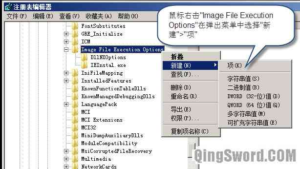
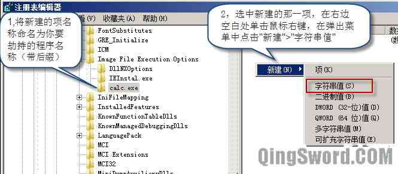
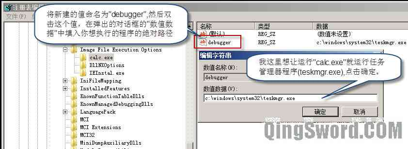

Windows系统IFEO映像劫持分析
引言
本文将介绍Windows系列操作系统中的IFEO（Image File Execution Options）映像劫持功能，这也是一些流行的系统病毒最喜欢使用的一个功能。
那么，什么是映像劫持呢？简单的解释就是，当你执行某一程序A的时候，运行的却是另外一个程序B。
在Win7之后的版本中，需要使用管理员权限才能对注册表中这一键值做出修改。
文章目录
0×1.IFEO在系统注册表的位置
打开图形化的注册表编辑器（regedit.exe），定位到下面这一项注册表键值，这就是配置系统镜像劫持的位置（在cmd中输入regedit回车就能打开注册表编辑器了，按照下面的路径依次展开即可）。
[HKEY_LOCAL_MACHINE\SOFTWARE\Microsoft\Windows NT\CurrentVersion\Image File Execution Options]
0×2.如何实施映像劫持
首先，使用图形化的注册表编辑器熟悉一次这个操作过程，在"Image File Execution Options"这个键下，新建一个子键，子键的名称设置成你要劫持的程序的名字，比如本例劫持计算器程序（calc.exe），我想让打开计算器程序的时候运行的却是任务管理器（taskmgr.exe），操作如下图：
  设置完成之后，在CMD下执行calc.exe（或在开始菜单>所有程序>附件中去启动计算器）运行的就是任务管理器，而非计算器程序，想要还原只需要在注册表中删除刚才创建的calc.exe键即可。
但有时候，我们并不能在图形界面下完成，而是只有一个shell，或者通过程序去完成这一操作，那么就需要使用控制台注册表编辑器reg了，在cmd中执行下面的命令效果是相同的（如果对控制台注册表编辑器不熟悉的朋友，可以参考这篇文章[使用Windows命令行reg控制注册表键值]）：
C:\>reg add "hklm\SOFTWARE\Microsoft\Windows NT\CurrentVersion\Image File Execution Options\calc.exe" /v debugger /t REG_SZ /d "c:\windows\system32\taskmgr.exe"
这就是映像劫持的简单原理，一些病毒利用系统的这一特性，将一些杀毒软件的程序名称添加到这里，并且在debugger中输入的是病毒的路径，就会让运行杀毒软件程序的操作变成了再次执行病毒体，而一些病毒会在系统不同目录存在多个副本，利用映像劫持劫持不同的程序，指向不同的副本路径，这也是一些病毒被杀死进程删除单个病毒体后又能重新复活的原因之一。